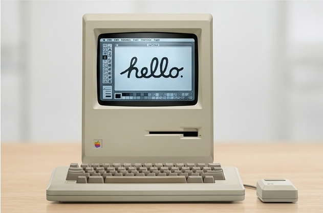
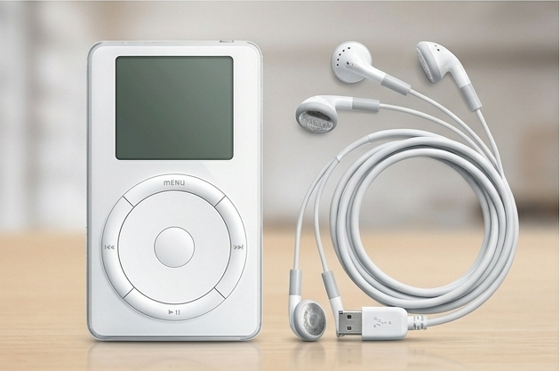
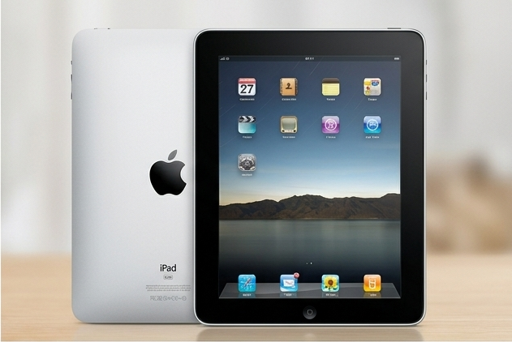

Steve Jobs was an American entrepreneur, inventor, and visionary who played a major role in shaping the modern technology industry. Born on February 24, 1955, in San Francisco, California, he developed an early interest in electronics and innovation.
In 1976, Jobs co-founded Apple Computer with Steve Wozniak and Ronald Wayne. What started as a small business grew into one of the world's most influential technology companies.
Throughout his career, Jobs introduced products that transformed the way people interact with technology. The Macintosh, iPod, iPhone, and iPad each represented a new approach to combining technology, design, and simplicity.
Beyond Apple, Jobs also founded NeXT and became a major figure at Pixar, helping the company grow into a leading animation studio. His journey was marked by creativity, determination, and innovation.
Steve Jobs passed away on October 5, 2011, but his ideas and influence continue to inspire entrepreneurs, designers, and innovators around the world.
Key milestones that shaped his legacy.
Steve Jobs was born on February 24, in San Francisco, California.
Co-founded Apple Computer with Steve Wozniak and Ronald Wayne.
Introduced the Macintosh, helping bring graphical computing to a wider audience.
Left Apple and founded NeXT, focusing on advanced computer technology.
Returned to Apple following its acquisition of NeXT.
Introduced the iPod, transforming the way people listened to music.
Introduced the first iPhone, redefining the smartphone experience.
Introduced the iPad, expanding the possibilities of mobile computing.
Steve Jobs passed away on October 5, leaving behind a remarkable legacy.

Introduced an accessible personal computer with a graphical user interface and a mouse, making computers easier for everyday people to use.

Transformed portable music by allowing users to carry thousands of songs in their pockets with a simple and elegant device.
Combined a phone, an iPod, and an internet communicator into one revolutionary device, redefining the smartphone industry.

Introduced a new way to experience digital content through a large Multi-Touch display, bridging the gap between smartphones and laptops.
NeXT – A New Beginning
After leaving Apple in 1985, Steve Jobs founded NeXT, a company focused on developing advanced computer workstations. Its technology later played an important role in the development of Apple's operating systems.
Pixar – Bringing Stories to Life
In 1986, Jobs acquired the computer graphics division of Lucasfilm, which later became Pixar. Under his involvement and leadership, Pixar grew into one of the most influential animation studios in the world.
A reminder to keep learning, stay curious, and never stop exploring new possibilities.